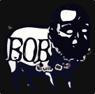

VIDEOS
Ed Pawlicki was ahead of his time. He documented loads of obscure Atlanta bands throughout the 90s. Subscribe to his YouTube channel. If not already selected, SORT BY => Date added (oldest) to get right to the bands. Ed was a fixture with his camera at many local shows. A longtime friend of BOB's!
Another BOB friend who documented the scene was Michael Koenig, who now makes his living as a photographer. His channel is Vacant Moon. More about Mike futher down this page.
Live @ WREK 91.1 FM 02-28-1995 (Part 1)
Atlanta's obscure and oft ignored airwaves were penetrated by BOB this Tuesday night beginning at 10pm.
"Animal Speak" was often fun to perform live. Turning free form after the first 4 minutes of structure, we never knew if it would be inspired and transcendental or flat and tedious, in need of being cut short. What ended up officially on "Rounded At The Free End" was inspired, but not the best. Here, you can see the boys give it a go with Keith E Lee.
Live @ WREK 02-28-1995 (Part 2)
Meandering into "Animal Speak" around 8:05 and ending at 21:48 when Eric ejaculates, "I say we're outta here".
1995 was a busy year for BOB. In May we hit the road touring the East Coast in a modified Ford Econoline van. Mike Watt once showed off his Ford Econoline to me and Eric outside The Masquerade. It was the BOB van on steroids, modified for months of tour-spieling. BOB's modifications included metal work by Freddie DeSchon of local band Tweezer, that not only served to secure BOB's gear, but was artfully done and more unique than Mike's. Numerous bands suffered theft of equipment when playing sketchy neighborhoods around the U.S. On the road BOB was fortunate, though, Katt's bass was stolen from inside their rehearsal space.
CBGB's 05-03-1995
Rich's dad filmed this set on a VHS. Was it at this gig that the CB's office manager reneged on paying the $50 guarantee, which resulted in vandalizing a urinal by a certain anonymous band mate who stood greater than 6 feet 6 and smoked a lot of weed?
After 25 years, we reunited for two sets in Atlanta. This was the first night and part of a diverse lineup of several talented bands organized by WREK 91.1 FM. Jim Moran introduced, Mike Koenig filmed. BOB played two prior WREK benefit shows. The first was held at the Somber Reptile at which BOB performed as a duo in 92. The next afternoon, 04-08-2018, their friends Hayride, from Athens, opened the set at The Earl in East Atlanta.
The Bakery, Atlanta, GA. 04-07-2018 (Part 1)
"How's everyone doin' tonight. Hello Hello Hello... Hello Cleveland."
The remaining 6:48 minutes of The Bakery set includes "Pope is".
The Bakery (Part 2)
"Baby Baby One Two Three... Thank you Good Night."
Download  tunes. The links below take you to Bandcamp where you can name your price, including $0.00.
Beyond Failure
James Joyce - BOB, the art-rock/postpunk/whatever band from Atlanta in the 1990's was one of the great underrated gems of our time, check out my previous BOB posts. It was great that they were so prolific and provided us with so much material to digest. I also did an email interview with their guitarist/singer Rich Hudson (BF = me, RH = Rich Hudson):
RH: First, James, I enjoyed listening to your interview on the program "Following Your Passions". It's great what you've done with Beyond Failure, archiving a lot of obscure, if forgotten, Atlanta music in the 80s and 90s. It was exciting to be a part of the Atlanta scene in those pre-Internet days. There was camaraderie as well as friendly competition amongst the bands. We supported and inspired each other.
BF: Bob to me was the best of the strictly “local” bands from the 1990’s, in the sense that you were like a local secret that nobody outside Atlanta knew about, but should have. I believe all of your albums and singles were on local Atlanta labels, including Amy Potter’s Half Baked Records, etc. Was there ever any label interest outside of Atlanta, or out of town interest in Bob’s music in general? What kind of touring did you do as a band? Can you remember some of the more interesting bands and venues you encountered on the road? Friends made? Friends lost?
RH: Thank you for the complement! It really means a lot. I can say on behalf of all Bob band mates over the years, we're grateful for any interest in our music. It was a passion, at times an obsession. Any money earned, as you can imagine it wasn't much, went back into the band for recording, t-shirts, stickers.
There was some label interest. One Atlanta label had offered us a yearly allowance to go out on the road. Although the money may've sounded good, it wouldn't have covered our obligations at home much less the tour van we were expected to buy with it. That was in 1994 after Complex Organism Blues came out. In 97 an indie label based in NYC took a liking to us after a gig in Providence, RI, but we never worked out a deal. Last 2 albums were on our own non-label "Bullshi'vic Rekkids". Amy Potter was great about not interfering in her bands' artistic freedom. I remember when she first saw us at the Third Street Pub (through the tunnel from Georgia Tech). She was the general manager at WREK and she liked us! That was a big deal to me. WREK was my favorite station. She was a big part of the local Atlanta scene in the 90s aside from being a genuinely warm hearted lady.
We did at least 6 week-long tours up the east coast to Boston. We didn't have enough vacation time from our day jobs to go on a longer tour. It was more practical for us to play in the same cities several times to try to establish contacts and a following than to go on an extensive national tour. Eric bought a Ford Econoline van. I heard you say one of your bands drove the same thing. Fortunately, we didn't have too many break downs. It was before cell phones, so somebody had to walk to a phone booth.
Early Bob was Eric Ingram (drums), me (guit/voc) and Ted Grauch (bass). We had a gig in Wilmington, NC, way the hell out there on the coast; a long drive from Atlanta. We opened for "The Leaving Trains". They were a 4 piece from California. This was around 199(2). They had been touring through the bible belt and not having a good go of it; the singer was in drag. Cross-dressing wasn't as widely accepted in the south at that time! By the time they got to Wilmington they were down to a 2 piece. The bass player and 2nd guitarist quit somewhere around Birmingham. I remember when we pulled up to the club. There was the singer, a masculine dude, probably 6 foot +, standing at a phone booth in a black evening dress telling their record company that 1/2 the band quit. What really became a big inspiration for me when Ted quit Bob, was that the 2 piece Leaving Trains played their asses off. I mean, they could've easily said to hell with it and ended their tour right there. But they didn't. They persevered. When Ted quit, Eric and I played as a 2 piece for about 9 months. We even made a bass player silhouette out of cardboard that joined us on stage at the Masquerade. It was an important experience.
Venues: CBGB's. One time we (Ray on bass) went on after Unsane and The Cows. Wow, we thought, this is a big crowd. Before we could set up almost everyone left! Not good to go on after well-known bands in NY. People in NY always have some place to be. If you're not on their radar, they have no time for ya. We played CBGB's another time and a Van Halen-like band went on after us. The singer even had a wireless mic so he could annoy the 15 or so people in the
audience. It might've been that night that Ray wreaked havoc on a urinal when the club reneged on the $50 guarantee. One of my favorite Bob moments was when we opened for Ben Folds Five in Raleigh, NC. A big crowd of college kids were all up by the stage waiting for our first song, probably assuming that we sounded similar, or at least, complimentary to Ben
Folds. Obviously, we didn't. We opened with "Who is Sharon Tate?". "Killing makes me cum....Living makes me sick"....[Eric hits the toms] I release a bloody scream. The audience backs off a respectful 15, 20 feet! Surprisingly, several endured our set before the more conventional stylings of Ben Folds.
BF: Your sound went through many twists and turns from your very first singles (e.g. The Peel Sessions and Atomic Café) to your last album Pendulum. What were your influences during all these periods in your band’s history? How would you characterize your progression from the beginning to the end? Did you have any coherent vision for your band as the years went on?
RH: Early on, SST Records, The Minutemen, Sonic Youth. Fugazi was also influential, but not so much for me. We liked pop music, art school Velvet Underground, Jesus Lizard. Later, we attended "Table of the Elements" festival during Freaknick in Atlanta. That was amazing. It directly influenced the song "Fist Embodied Duck" and probably most of "Rounded at the
Free End". It was in an art gallery off Peachtree Rd in Buckhead. Keiji Haino did a solo performance. The audience was silent and respectful when Haino took the stage. Haino was dressed in black, had sun glasses and a rock star attitude. He poses before the microphone, silent. Anticipation builds. Then he unleashes a series of unintelligible spastic screams. It was funny, especially because no one in the artsy crowd dared laugh. He then proceeds to play the guitar
which sounds like a jet engine for about 30 minutes. AMM, Faust and Tony Conrad all performed as well as 3/4 of Sonic Youth. I never thought about song writing the same way after Table of the Elements, thus, the guitar chord drone for most of "Fist Embodied Duck" inspired by Tony Conrad's extensive drone pieces.
We progressed from a minimalist pseudo punk band to an arena-rock-dance-collective that never performed in an arena! I mean, on Pendulum, we had 3 guest stars, one of whom was Sicily Simpson (great back up singer). In terms of sound, the songs were meant to be as big as the E Street Band. However, Bob music would always have a gamey underground smell that wreaked of artistic freedom! Bruce Springsteen was a tenderloin, Bob was a north american diving duck. Eric and I once had a short lived band called North American Diving Duck (NADD) before the Bob days.
There was no coherent vision. The Bob sound changed with the personality of each bass player. We were more punk with Ted, still developing as song writers. With Ray, it was a mixture of free-form improv, aggression and melody. Katt was about grooves, dance and entertainment, sometimes a circus. Eric and I were open to seeing how the sound could develop. Mostly, we were all great friends. Creating music together was our God experience. Other people turn to religion, some people end up in prison. We were in a band. It was the controlled release of energy.
BF: Your albums seem to have a lot of experimental interludes, unnamed tracks, random bits and pieces to make the album an entire listening experience, and not just a collection of hit singles. Was this a conscious effort on your part, or is there a motive behind how you assembled and sequenced your albums? Are there any bands you drew inspiration from in putting together these records?
RH: We did take time to consider all tracks and song order. For example, there is 33 seconds of silence between "Who is Sharon Tate?" and the untitled 17th track on Complex Organism Blues (known as "Atomic Cafe"). The 33 seconds was Ray's idea to honor local band King Kill 33. We divided the 20 minute song Animal Speak into 7 different tracks. The purpose was to disorient the listener when they put the disc on random play. I remember tuning to WREK a few years after the release and hearing one segment of "Animal Speak". It was an odd experience because I thought: I like that, sounds familiar, who is it? Then the DJ identified it as Bob. It surprised me in a good way. I can't say that we drew inspiration from anyone when putting these records together. I'm sure subconsciously we did, but it was more about intuition: if it sounded good we went with it.
BF: You are also one of the only bands that I can remember that has been able to successfully use vocal effects, bullhorns, etc. in your music. In my experience, vocal effects can be used as a trick to mask any shortcomings of the singer, however you were able to add it as a textural element in the songs and not use it as a “crutch”. Can you tell us more about your strategies for vocals?
RH: I always, always wanted the vocal to be compelling. I was also self conscious about my voice. I wished I could sing like Bono or Ozzy! Back in 1987 Eric and I worked on a song called "Ingrid Receives a Hickey". We recorded it on Eric's 4 track tape machine. On playback I didn't like the vocal, but I liked the tune. Trying another take I cupped my hands over my mouth which resulted in a canned mid range sound. The affected voice was more fun to listen to. Every song had different demands. Vocal effects were trial and error. "You can't shine shit" as Jeff Bakos (Bakos Amp Works) would say. If the song is lousy no amount of effects will make it good. To this day I could still go back and remix some Bob songs because I was unhappy with a vocal level or delivery.
BF: What made you decide to ultimately end the band in 2000?
RH: Eric's departure. When Eric left, Bob was essentially kaput. Eric and I had played together in various bands since 1986. We worked really well together. He understandably had enough of using his vacation time to go on the road. Our momentum had slowed. There wasn't much local interest in Bob anymore plus the song writing process became agonizing. "Pendulum" was a strong Bob effort, but we never got around to promoting it. Katt and I tried to continue Bob with our friend Mike Koenig (Lesbian Afternoon). We did a set at Dottie's dressed up like pirates. We were midget pirates so we played on our knees. Bob was over!
BF: Lilburn is usually associated in my generation with the hardcore scene that developed there during the same time you were an active band (e.g. Act of Faith, Crisis Under Control, etc.). Did you go to high school or were otherwise friends with the other bands in town?
RH: We lived in Lilburn. None of us went to school there or knew the music scene. We were a part of the Atlanta/Athens scenes. We never gigged in Lilburn. I do remember seeing Black Flag written in chalk on the street. I thought there must be some cool hardcore element about.
BF: What was your songwriting process? Did you jam out songs as a writing mechanism or was there a true composer in the group?
RH: We collaborated on every song, so it involved a lot of jamming. A lot of times I would bring in an idea on guitar with a vocal melody to start the process. We'd try it out at practice and if it stuck it might turn into a Bob song. "Pope is" was a guitar riff that I was addicted to. Eric and Ted came up with beautiful drum and bass parts for it. Ted did a guitar overdub with feedback during the middle section on the Peel Sessions EP: gave me goosebumps. "Pope is" was
unlike any of our previous songs in that it was based on an ascending riff rather than a more conventional chord progression. It was liberating: for early Bob it was a leap away from punk.
BF: How many bass players did you ultimately have? Why do some bands cycle through one instrument over others? Did you ever assemble a quartet or something larger? The Bob orchestra?
RH: Bob had 3 bassists: Ted Grauch, Ray Surinck and Katt Gass. As for instrument choice, Ted played bass with us, but guitar with The Go Figures (from Athens), the band he ultimately left us for. Ray played bass; wasn't interested in guitar. Katt played bass, saxophone and liked to sing. Eric loved the drums and sometimes played trumpet. I liked both guitar and keyboard. I imagine bands cycle through instruments to try something new. For me, I played guitar for so many years that I was glad to try keyboard.
For our last album "Pendulum" Bob was basically a quartet/orchestra. Sicily Simpson sang back up on most of the tunes. We had a guy named Harold who played percussion with Eric on "Meteors in Twilight".
BF: Venue-wise, it seems that you guys were open to playing more places than the other bands of your scene, and that is how I got to see you at places like The Somber Reptile and Homage Cafe, etc. Did you consciously decide to stick your neck out there in Atlanta and take some risks with the shows and lineups that you played?
RH: I don't remember any limitations on where we'd play if we could get a gig. We didn't feel like we had anything to
lose, so I wouldn't say there was any risk involved. I liked The Somber Reptile. Qui Que (however you spell his name)
was good to us. Somber Reptile was where Eric and I played as a duo during a 1993 WREK benefit. I have good memories of
those times. That was the first time that we performed the song "Nasty". It was very minimal without the bass or Ray's
back up vocal.
BF: What is everyone in the band doing now? Are you going to start an art-rock band in Switzerland anytime soon?
RH: Ted is married, has a young daughter, lives somewhere near Philadelphia. He occasionally gigs with Heinous Bienfang if they have a reunion. Ray Surinck lives with his wife in New Orleans. He's been playing in local New Orleans bands for years. He had a punk band called Poop du Jour, plays in War Amps nowadays. He mostly plays bass, but sometimes drums, from what I understand.
Katt Gass is married, has a daughter, lives in East Atlanta. She played in a couple of Atlanta bands after Bob's demise. One was called Casionova. Her husband, Billy, plays guitar and I know they had a band together. She still screams like an infidel getting tortured by a radical muslim. I was tuned into Live at WREK a few years ago. This hard rock band was playing. The singer was screaming. I know that scream. Sure as hell it was Katt!
Eric Ingram is married, has a son, also lives in East Atlanta. I know he's interested in electronic music these days. I think he sometimes jams with people on drums. He hasn't been in a band since Bob. He's very busy with work and his family. Eric and I played together for close to 14 years. We had a great run!
After Bob I played with Brian Cook, one of Pineal Ventana's first bassists. We were an Athens duo. We put out 2 full length CDs Geographic Tongue and Apocalypse Wow! We called the duo Black Love. I did a solo album called Hey Ri'h around 2006.
Kodak Moments
On commode again. I just can't wait to get on commode again.
- BOB
- B
- O
- B